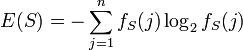
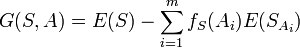

Machine Learning
for <insert cliche here>
Chris Nelson
Who am I?
What's Machine Learning?
Depth not breadth
There will be Math
The Project
- Recommending home improvements
- Bunches of rules
- Expressed as cuke tables
A simple rule
| Has pool? | Has efficient pump? | Upgrade recommended |
|---|---|---|
| No | No | No |
| Yes | No | Yes |
| Yes | Yes | No |
Turns into simple code
class PoolPumpRule
def evaluate(property)
property.has_pool? && property.has_efficient_pool_pump?
end
end
More interesting example
| type | last_replaced | result |
|---|---|---|
| Pin-based flourescent | >= 10 yrs ago | not recommended |
| Pin-based flourescent | < 10 yrs ago | not recommended |
| Screw-in incandescent | < 10 yrs ago | recommended |
| Screw-in CFL | >= 10 yrs ago | recommended |
| Screw-in CFL | < 10 yrs ago | recommended |
| Screw-in incandescent | >= 10 yrs ago | recommended |
| Don't Know | >= 10 yrs ago | recommended |
| Don't Know | < 10 yrs ago | not recommended |
Turns into more code
class ReplaceLightingRule
def evaluate(property)
if property.lighting_type == "Screw-in incandescent" || property.lighting_type == "Screw-in CFL"
true
elsif property.lighting_type == "Pin-based fluorescent"
false
elsif property.lighting_type == "Don't Know"
property.lighting_installed_at < 10.years.ago
end
end
end
Woot!
2 down, 30-something to go!
With unit tests
By the end of the week
Le sigh..
Decision trees
| type | last_replaced | result |
|---|---|---|
| Pin-based flourescent | >= 10 yrs ago | not recommended |
| Pin-based flourescent | < 10 yrs ago | not recommended |
| Screw-in incandescent | < 10 yrs ago | recommended |
| Screw-in CFL | >= 10 yrs ago | recommended |
| Screw-in CFL | < 10 yrs ago | recommended |
| Screw-in incandescent | >= 10 yrs ago | recommended |
| Don't Know | >= 10 yrs ago | recommended |
| Don't Know | < 10 yrs ago | not recommended |
ID3
- Iterative Dichotomiser
- Ross Quinlan
- Entropy
Entropy
n = number of possible values for the given attribute
fs(j) = frequency that the jth value occurs
| type | last_replaced | result |
|---|---|---|
| Pin-based flourescent | >= 10 yrs ago | not recommended |
| Pin-based flourescent | < 10 yrs ago | not recommended |
| Screw-in incandescent | < 10 yrs ago | recommended |
| Screw-in CFL | >= 10 yrs ago | recommended |
| Screw-in CFL | < 10 yrs ago | recommended |
| Screw-in incandescent | >= 10 yrs ago | recommended |
| Don't Know | >= 10 yrs ago | recommended |
| Don't Know | < 10 yrs ago | not recommended |
| type | last_replaced | result |
|---|---|---|
| Pin-based flourescent | >= 10 yrs ago | not recommended |
| Pin-based flourescent | < 10 yrs ago | not recommended |
| Screw-in incandescent | < 10 yrs ago | recommended |
| Screw-in CFL | >= 10 yrs ago | recommended |
| Screw-in CFL | < 10 yrs ago | recommended |
| Screw-in incandescent | >= 10 yrs ago | recommended |
| Don't Know | >= 10 yrs ago | recommended |
| Don't Know | < 10 yrs ago | not recommended |
-(5/8 * log2(5/8) + 3/8 * log2(3/8)) = 0.954434002924965
Gain
What is the effect on entropy if branch on a given attribute?
- m = number of values for attribute
- fs(Ai) = frequency that the ith value occurs
- E(SAi) = entropy of the results for rows where an attribute has a given value
| type | last_replaced | result |
|---|---|---|
| Pin-based flourescent | >= 10 yrs ago | not recommended |
| Pin-based flourescent | < 10 yrs ago | not recommended |
| Screw-in incandescent | < 10 yrs ago | recommended |
| Screw-in CFL | >= 10 yrs ago | recommended |
| Screw-in CFL | < 10 yrs ago | recommended |
| Screw-in incandescent | >= 10 yrs ago | recommended |
| Don't Know | >= 10 yrs ago | recommended |
| Don't Know | < 10 yrs ago | not recommended |
Entropy(type=Pin based fluorescent) =
-(1 * log2(1) + 0 * log2(0)) = 0
| type | last_replaced | result |
|---|---|---|
| Pin-based flourescent | >= 10 yrs ago | not recommended |
| Pin-based flourescent | < 10 yrs ago | not recommended |
| Screw-in incandescent | < 10 yrs ago | recommended |
| Screw-in CFL | >= 10 yrs ago | recommended |
| Screw-in CFL | < 10 yrs ago | recommended |
| Screw-in incandescent | >= 10 yrs ago | recommended |
| Don't Know | >= 10 yrs ago | recommended |
| Don't Know | < 10 yrs ago | not recommended |
Entropy(type=Screw-in incandescent) = 0
| type | last_replaced | result |
|---|---|---|
| Pin-based flourescent | >= 10 yrs ago | not recommended |
| Pin-based flourescent | < 10 yrs ago | not recommended |
| Screw-in incandescent | < 10 yrs ago | recommended |
| Screw-in CFL | >= 10 yrs ago | recommended |
| Screw-in CFL | < 10 yrs ago | recommended |
| Screw-in incandescent | >= 10 yrs ago | recommended |
| Don't Know | >= 10 yrs ago | recommended |
| Don't Know | < 10 yrs ago | not recommended |
Entropy(type=Don't Know)
-(0.5 * log2(0.5) + 0.5 * log2(0.5)) = 1
Calculating Gain
Proportional entropy partioned by lighting type:
1/4(0) + 1/4(0) + 1/4(0) + 1/4(0.25)
Gain(lighting type) = 0.95 - 0.25 = 0.70
Gain(installed on) = 0.95 - 0.90 = 0.05
Decision trees in ruby
ai4r
- Sergio Fierens
- Lots of algorithms
- Neural networks
- Genetic Alogorithms
- Classifiers:
- ID3
- Outputs the tree as code
Demo time
That's cool, but...
| type | last_replaced | result |
|---|---|---|
| Pin-based flourescent | 1999 | not recommended |
| Pin-based flourescent | 2005 | not recommended |
| Screw-in incandescent | 2009 | recommended |
| Screw-in CFL | 1997 | recommended |
| Screw-in CFL | 2010 | recommended |
| Screw-in incandescent | 1990 | recommended |
| Don't Know | 1992 | recommended |
| Don't Know | 2007 | not recommended |
Entropy Bias
- Entropy(S, installed_at = 1990) = 0
- Gain = Entropy(S) - 0 = 0.95 - 0 = 0.95
- It will always pick installed_at!
- Even though it's not really predictive :(
Handling continuous attributes
- What if we "discretize" them?
- Need to figure out where to split
- Sort all the uniq values
- Build a list of all the halfway points as candidates
- Measure the gain from each
- Split point with highest gain wins
C 4.5
- Later algorithm by Quinlan
- Handles continuous attributes
- Among other things
decisiontree
- Ilya Grigorik
- Outputs tree graphically
- Deals with continuous attributes correctly
- adds Array#entropy
Let's see it
Rules or examples?
| type | cgf_efficiency | gwh_efficiency | hp_efficiency | last_replaced | constructed | result |
|---|---|---|---|---|---|---|
| Electric resistance | not recommended | |||||
| Gas central furnace | More than 78% AFUE | not recommended | ||||
| Gas central furnace | 78% AFUE or lower | recommended | ||||
| Gas central furnace | Don't Know | >= 18 yrs ago | recommended | |||
| Gas central furnace | Don't Know | < 18 yrs ago | not recommended | |||
| Electric central furnace | not recommended | |||||
| Gas wall heater | More that 65% AFUE | not recommended | ||||
| Gas wall heater | 65% AFUE or lower | not recommended | ||||
| Gas wall heater | Don't Know | >= 18 yrs ago | recommended | |||
| Gas wall heater | Don't Know | < 18 yrs ago | not recommended | |||
| Heat pump | More than 7.7 HSPF | not recommended | ||||
| Heat pump | 7.7 HSPF or lower | not recommended | ||||
| Heat pump | Don't Know | >= 15 yrs ago | recommended | |||
| Heat pump | Don't Know | < 15 yrs ago | not recommended | |||
| Don't Know | <= 1978 | recommended | ||||
| Don't Know | >= 1979 | not recommended |
Decision Table
- decision_table
- very simple gem by your humble presenter
- for when you have rules expressed in tabular format
- You already know what order to do the comparisons
- Simple brute-force approach
decision_table example
Lessons learned
- Don't write the code yourself!
- still need test cases tho
- Understand your algorithm
- Simplest thing than can possibly work
Resources
- igvita.com
- decisiontrees.net
- http://onlamp.com/pub/a/python/2006/02/09/ai_decision_trees.html